1.Chop pieces of raw beef into small pieces to be later marinated and cooked. With bones, cut as much meat from around it as possible.
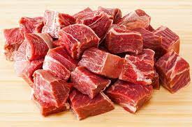2.Add chopped onions, and garlic and onion paste to a pot with vegetable oil and heat.
 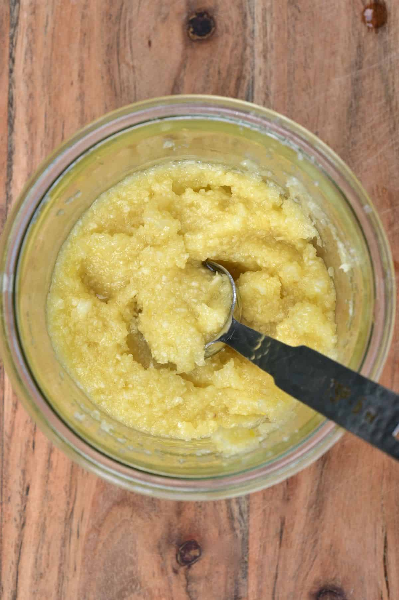
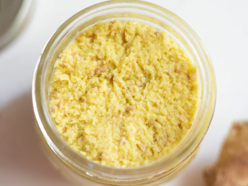
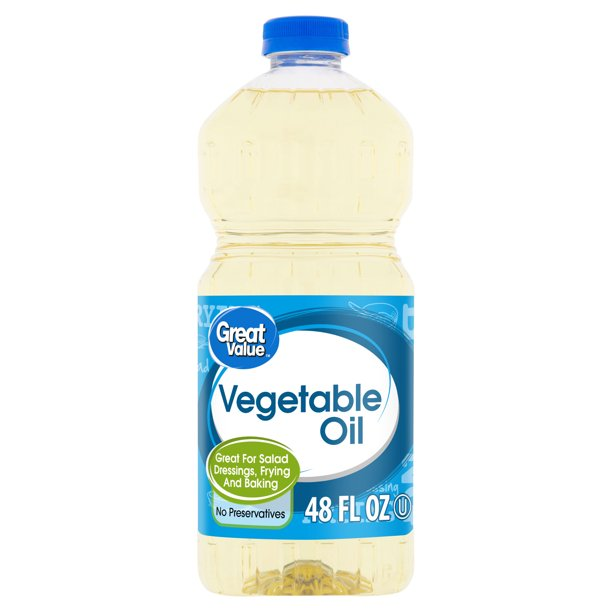
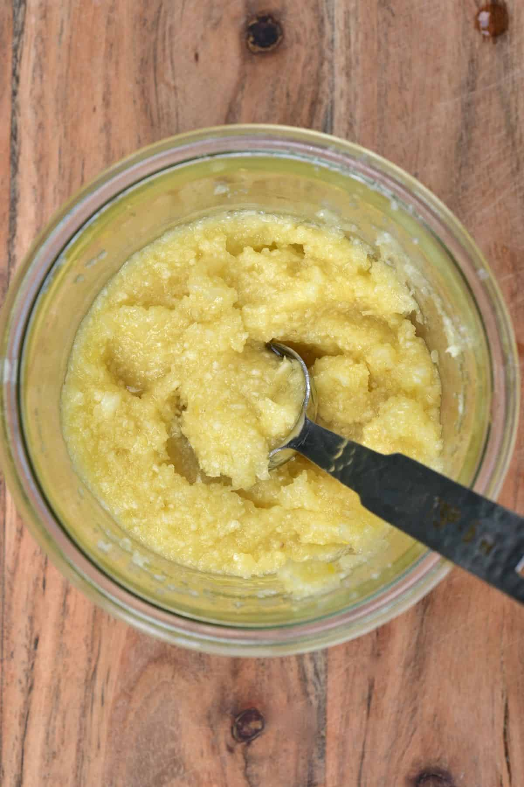
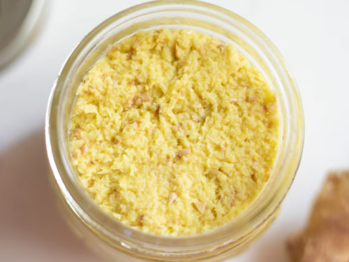
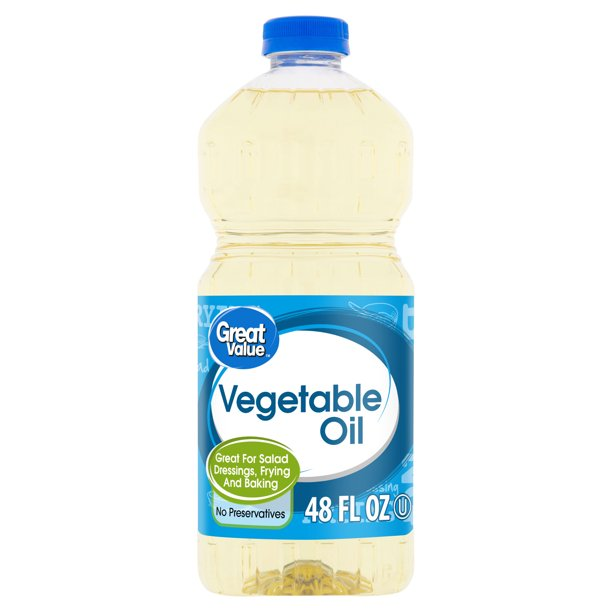
3.When mixture turn brown, add ground red pepper, ground turmeric, ground cumin, ground coriander, and mix and cook further.
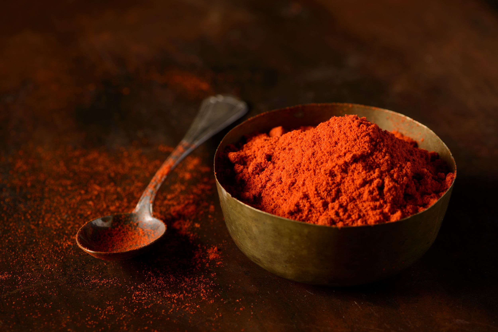 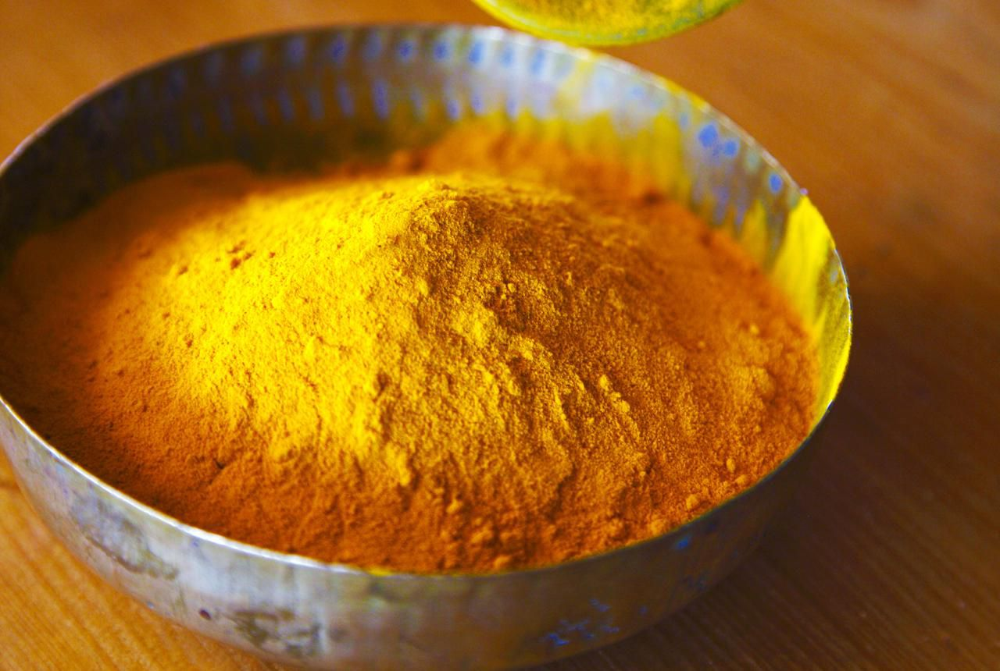 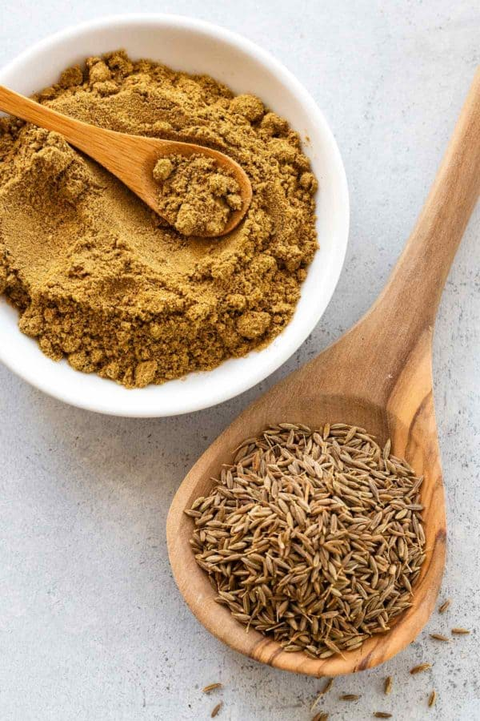 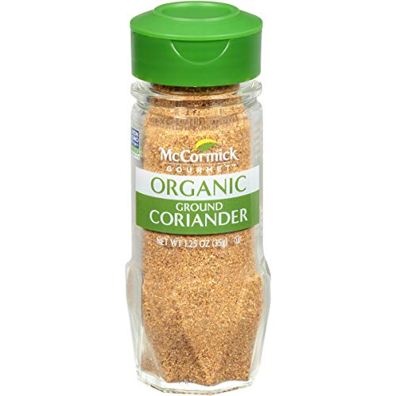4.After 2-5 minutes, add more vegetable oil, then black pepper (ground and unground), bay leaves, (ground and unground) cinnamon and several spoons of salt. Mix properly
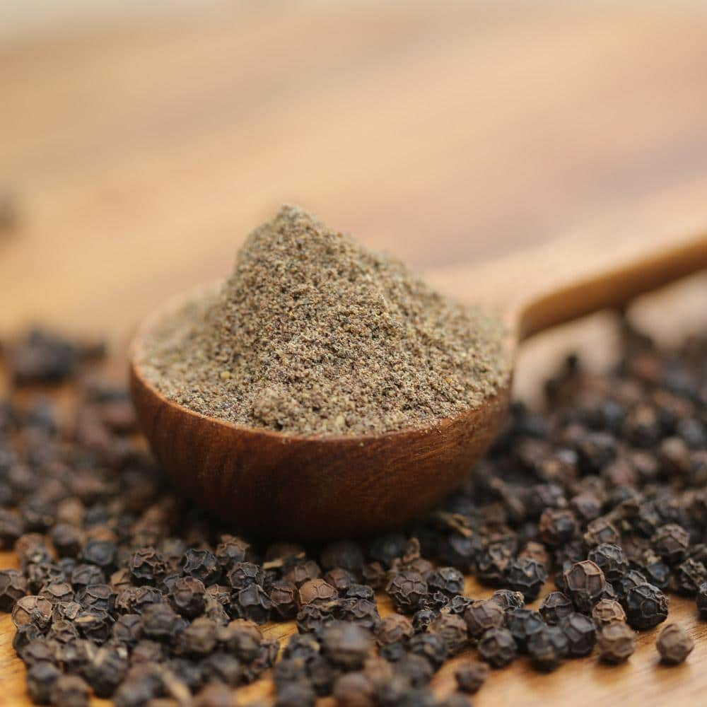 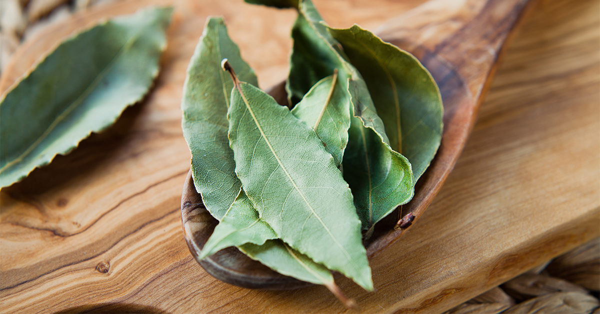
5.Add the beef and chickpeas with several cups of water and let the food cook for a while.
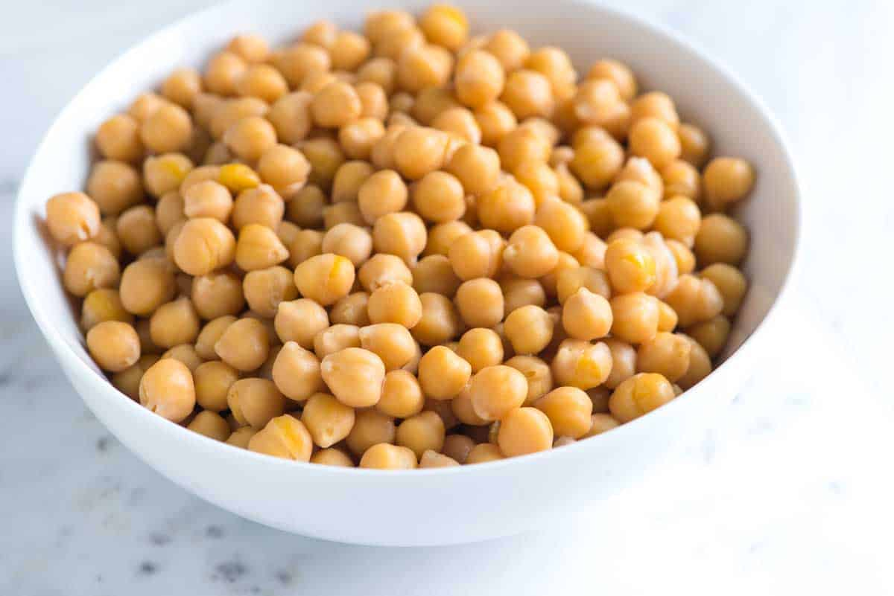 Return to index